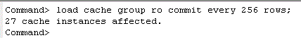
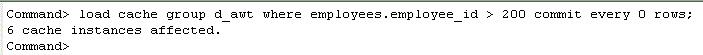
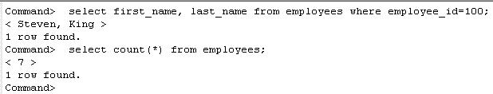
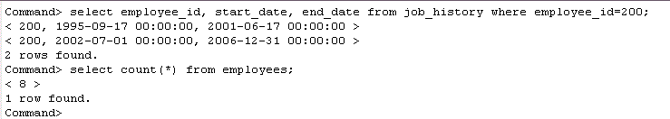

Data from the Oracle database can be preloaded into a cache group by using the LOAD CACHE GROUP statement. Depending on the cache group type, an optional WHERE clause can also be specified to restrict the amount of data to be cached. For dynamic cache groups, data is also loaded when SELECT, INSERT, UPDATE or DELETE statements are issued against one of the cache tables.
The examples below show how you can load data from Oracle tables into cache groups.
4. Preload data into Cache Groups
Only users with either CACHE_MANAGER or LOAD CACHE GROUP privilege can load data into cache groups. Enter the LOAD CACHE GROUP statement below in ttIsql, to populate the read-only cache group cacheadm.ro
load cache group ro commit every 256 rows;

Enter the following LOAD CACHE GROUP statement in ttIsql to pre-load a dynamic cache group cacheadm.d_awt, with employees records where their id is greater than 200;
load cache group d_awt where employees.employee_id > 200 commit every 0 rows;

Note: After loading the data, the autorefresh state for read only cache groups will be changed to "ON". Changes to the underlying autorefresh tables in Oracle will be applied to the cache tables once the defined refresh interval has been reached. For asynchronous writethrough cache groups, all updates in the cache database will be propagated to the Oracle database, once the replication agent process is up and running.
Dynamically Load Data into a Cache Group
For a dynamic cache group, if no rows are found by a query issued against the cached tables, it will execute the query in Oracle. If any rows are returned they will be returned by the query and inserted into the TimesTen cache tables. The examples below show how data can be loaded on-demand into a dynamic cache group.
Log in to ttIsql as the cache table user HR, passing in both the TimesTen and Oracle passwords
connect "dsn=cachedb1_1211;uid=hr;pwd=hr;oraclepwd=hr";
Select from the hr.employees table to list the records loaded from the previous LOAD CACHE GROUP statement.
select employee_id, first_name from employees;
To load data into a dynamic cache group, you must use a WHERE equality clause in your query against either the primary key or foreign key column on the cache tables.
select first_name, last_name from employees where employee_id=100;
select count(*) from employees;

When performing a WHERE clause query against a child cache table, both the child and parent records will be loaded into the cache database.
select employee_id, start_date, end_date from job_history where employee_id=200;
select count(*) from employees;


For more information on Cache Groups refer to the documentation here
| < Previous | 1 | 2 |